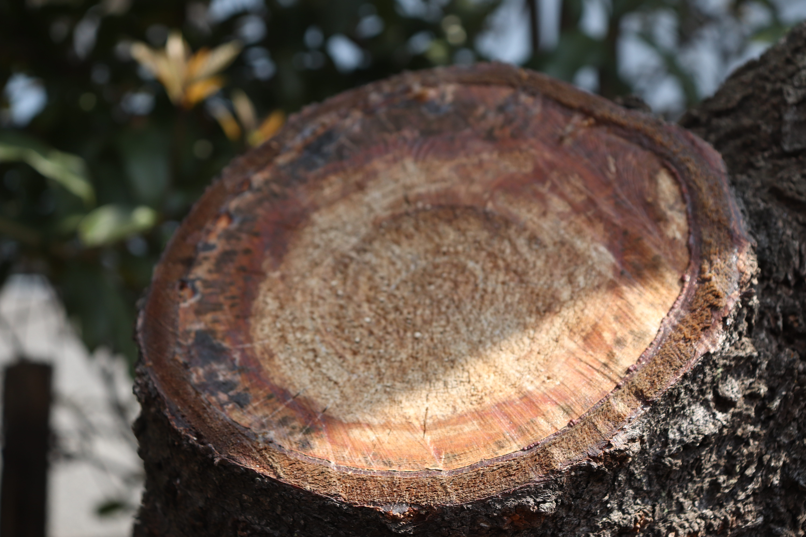

- 

ブログを書こうと思ったきっかけ

こんにちは、管理人の方の人です。
今日のテーマは、、、ズバリ、なぜブログを始めたのかです。
始めに言っておきますが、この話は新しくブログを始めたい人、ブログとはなんぞやと思う方向けです。
それでは本題に入っていきます...がちょっと執筆者の方が忙しいみたいなのでしばらくは自分(管理人)が書きます
なので執筆者の完走などは管理人の勝手な妄想です()お許しください笑笑
Now Loading
前置きが長すぎました() 以後気をつけます()
なぜ始めたのかというと、”なんとなく”が80%、残りの20%が”高校で芸術系の部活が作れなかった”です。
まず前者から話します。まあなんとなくはなんとなくなのですが、友達(執筆者)とプライベートで箱根行った時温泉に浸かりながらブログ作りたいなーって（）全てはここから始まりました。
始めは手探り状態だったのでカフェでどんな感じの構図にするか話しましたね。執筆者の方は写真メインのブログにしたいとのことだったので、HTML,CSSを勉強中だった僕(管理人)にはもってこいでした。
まあ、そんな感じですかね。
あとは、僕(以下略)とその友達とで高校の部活を作ろうという話になったのはいいのですが、部員が足りずお蔵入りになってしまったのでその出来事がブログを作ろうという行動を押してくれたっていうのはあります。
てな感じですね。
これからブログを始めたい君へ。
この話を最後まで読んでくれているってことは興味はあるみたいだね。ブログを作るのにはHTML,CSSという二つの言語を主に使うんだけど楽しいからやってみ？僕でさえできたのだから君にできないはずがない。
まずは本を買ってじっくり読んで写経して、まずはそこから。頑張れ。(From管理人)
なんだろう... 最後の文いるのかな()...